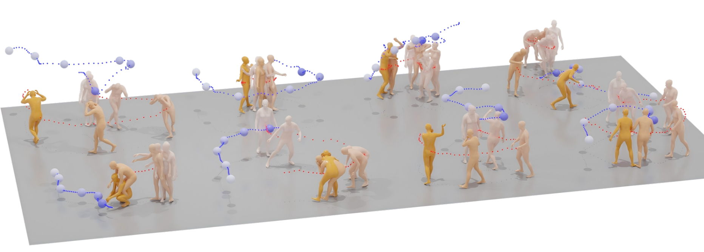
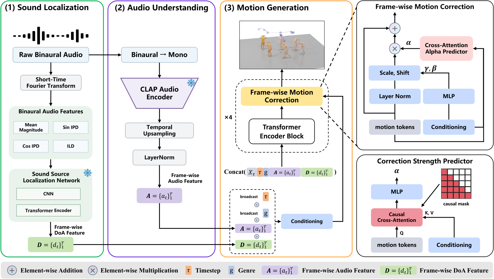
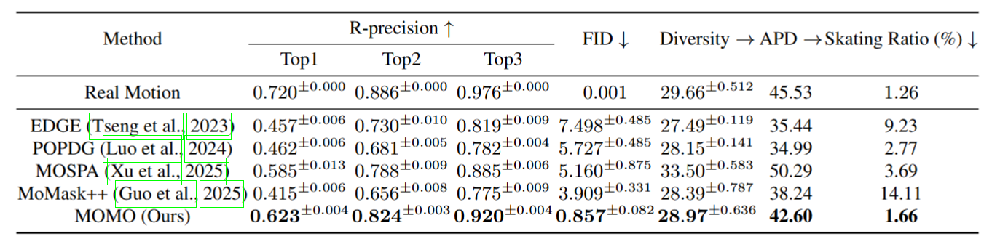
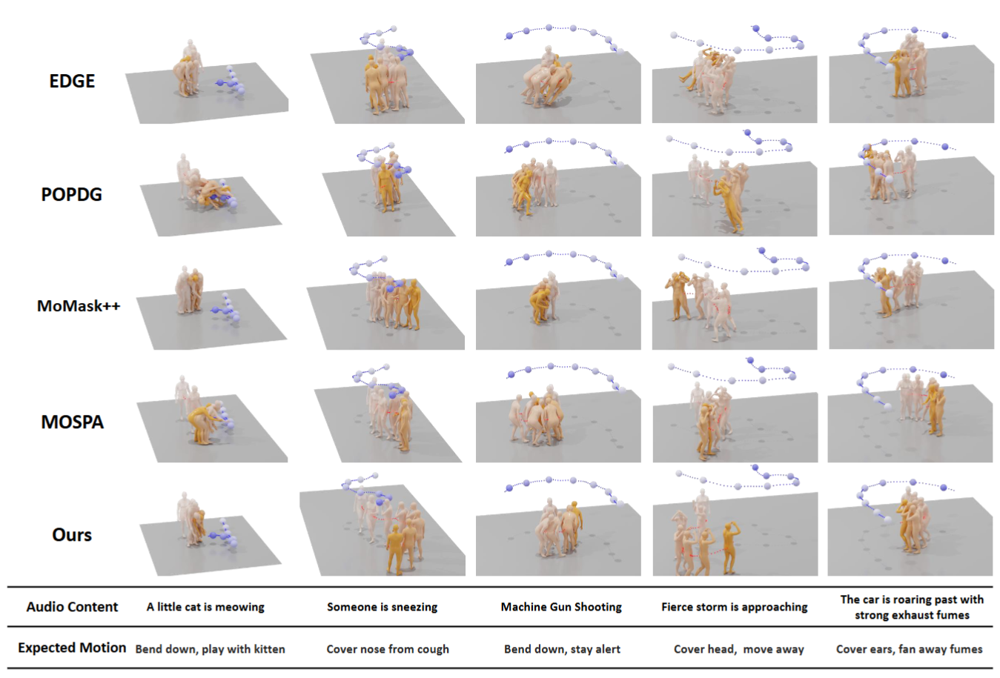

This paper proposes a novel task for synthesizing 3D human motions in response to dynamic spatial audio. To support this new task, we collect DySAM, the first dataset comprising synchronized dynamic spatial audio, corresponding sound source trajectories, and high-quality 3D human motion. In this figure, the model generates diverse and realistic human reactions to various moving acoustic events.
Human responses to sound depend not only on its semantic content, but also on the evolving spatial relationship between source and listener, conveyed through spatial audio and its temporal dynamics. Modeling human reactions to such dynamic spatial audio is important for character animation, human behavior analysis, and robotics. As of yet, existing audio-driven motion generation methods primarily focus on non-spatial or static acoustic conditions, leaving this important problem largely underexplored. To bridge this gap, we formulate the novel task of dynamic spatial-audio-driven human motion generation and introduce two motion-captured datasets. We introduce the Dynamic Spatial Audio and Motion dataset (DySAM) as the first dataset and benchmark for this task, providing synchronized binaural audio, 3D human motions, and moving sound source trajectories. Given the importance of dynamic spatial cues of sound sources, we further provide the Dynamic Spatial Audio Localization dataset (DySAL), an auxiliary binaural localization dataset that pairs diverse acoustic events with head poses and moving source trajectories to support spatial audio perception. For benchmarking, we propose MOMO for human Motion generation from Moving Sounds, a diffusion-based framework guided by three coupled principles: localization, understanding, and generation. MOMO performs localization by estimating head-centric spatial direction cues of the moving source directly from raw binaural audio, avoiding reliance on ground-truth source coordinates. It performs understanding by extracting frame-wise audio-content representations, and performs generation by conditioning motion diffusion on both semantic features and dynamic spatial cues. Moreover, MOMO incorporates frame-wise motion correction during denoising, enabling temporally adaptive motion synthesis under evolving audio-spatial cues. Experiments show that MOMO outperforms existing baselines in motion fidelity, audio-motion alignment, and physical plausibility, demonstrating the potential of dynamic spatial audio for embodied motion generation.
DySAM (Dynamic Spatial Audio and Motion) pairs synchronized binaural audio, 3D human motions, and moving sound source trajectories. It contains 2,336 ten-second sequences (about 6.5 hours), covering 42 sound types and 109 audio sources recorded with eight actors, with both sensitive and insensitive reactions.
DySAL (Dynamic Spatial Audio Localization) provides about 3.3 hours of binaural audio paired with frame-wise sound source positions and listener head poses. Collected with the same setup, it supports dynamic sound source localization across diverse acoustic events.

Data collection setup. A moving omnidirectional speaker, a Vicon motion capture system, and timecode-synchronized binaural recording capture human reactions to moving sounds.
Data Processing. We use Vicon to capture human motion markers (green points) and speaker markers (orange points) in C3D format. MoSh++ fits SMPL-X body parameters to the human markers, while singular value decomposition (SVD) and Kalman filtering recover the speaker's center trajectory, visualized as the speaker trajectory (blue sphere). We then align each sequence with the ground plane and canonicalize it by translating the body's initial horizontal center to the world origin and rotating its initial forward direction to face the +z axis.
In the examples below, the left panel shows the raw data and the right panel shows the canonicalized result. We also explicitly visualize the axes of the head coordinate system.
In the real world, human reactions to dynamic sound sources depend on both how the source moves and what the sound conveys. Guided by these two factors, we design the MOMO framework around three complementary components: Sound Localization, Audio Understanding, and Motion Generation.

Overview of MOMO framework. MOMO comprises three coupled functional components: a sound source localization (SSL) network predicts a frame-wise head-centric DoA sequence D̂ from binaural audio (localization); a CLAP audio encoder extracts frame-wise audio content features A from mono audio (understanding); and a conditional diffusion model that iteratively denoise the Gaussian noise to generated motion, integrating Frame-wise Motion Correction to adaptively correct each motion according to frame-wise conditions (generation).

Quantitative Comparisons on the DySAM Dataset. ± indicates a 95% confidence interval. Bold face indicates the best result. → means the closer to Real Motion the better.

Qualitative comparison of state-of-the-art methods for the dynamic spatial audio-to-motion task. We visualize motion results from five cases.
We provide six comparison videos for these methods. Please click to play the video and turn on the sound.
@article{cai2026momo,
title={{MOMO}: Human Motion from Moving Sounds},
author={Cai, Deli and Xu, Shuyang and Dou, Zhiyang and Lan, Zitong and Zhao, Mingmin and Ding, Changxing and Komura, Taku},
journal={arXiv preprint arXiv:2610.24522},
year={2026}
}